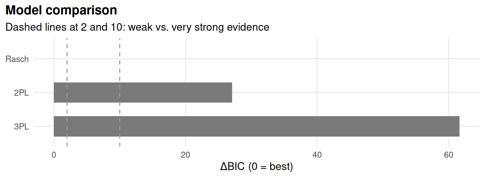

Chapter 3 Estimation and comparing models
Learning goals. After this chapter you can
- describe marginal maximum likelihood estimation in words;
- check whether a model has converged, and know what to do when it has not;
- compare nested models with a likelihood-ratio test and any models with information criteria;
- judge overall model fit with M2, RMSEA, SRMSR and CFI;
- explain why AIC and BIC can disagree, and what sample size has to do with it.
Key terms: calibration, marginal maximum likelihood, convergence, standard error, likelihood-ratio test, information criteria, M2, RMSEA, SRMSR, CFI and TLI.
3.1 The ideas
Calibration means estimating the item parameters. We never observe \(\theta\), so we cannot simply regress responses on it. Marginal maximum likelihood (MML) instead assumes a distribution for \(\theta\) in the population, usually standard normal, and integrates it out: The likelihood of a response pattern is its probability averaged over all possible values of \(\theta\). The item parameters are chosen to make the observed patterns as likely as possible (Bock and Aitkin 1981).
mirt maximizes this likelihood with the EM algorithm by default. It replaces the integral with a sum over a grid of quadrature points and alternates two steps: The E-step works out, for every person, how likely each grid point is given their responses and the current item parameters; the M-step updates each item’s parameters as if those expected counts were data. The cycles stop when the parameters stop changing, which is called convergence. If the algorithm hits its limit of 500 cycles first, mirt warns you, and the estimates should not be trusted.
Once a model has converged, we compare it with alternatives.
- Likelihood-ratio test (LRT). For nested models (the Rasch model is a 2PL with equal slopes; the 2PL is a 3PL with \(c = 0\)), twice the difference in log-likelihoods is approximately chi-square distributed with degrees of freedom equal to the difference in the number of parameters. With large samples even trivial improvements become significant.
- Information criteria. \(\text{AIC} = -2\log L + 2k\) and \(\text{BIC} = -2\log L + k\log N\), where \(k\) is the number of parameters and \(N\) the sample size. Smaller is better. BIC punishes extra parameters more heavily once \(N > 7\), so it favours simpler models. A difference of 10 or more BIC points is usually read as strong evidence.
- Absolute fit. The M2 statistic (Maydeu-Olivares and Joe 2006) compares observed and expected proportions for single items and pairs of items. RMSEA (below about 0.05 is close fit), SRMSR (below about 0.05) and CFI (above about 0.95) are effect sizes built from it. Treat the cut-offs as rough guides, not rules.
3.2 Example 1: A test the Rasch model fits
LSAT6 is another five-item section of the Law School Admission Test, with
1,000 test takers. It is a textbook example of data the Rasch model fits well.
Fit the models one at a time, check convergence, and compare them:
rasch <- mirt(resp, 1, itemtype = "Rasch", verbose = FALSE)
twopl <- mirt(resp, 1, itemtype = "2PL", verbose = FALSE)
extract.mirt(rasch, "converged")
#> [1] TRUE
extract.mirt(twopl, "iterations")
#> [1] 22
anova(rasch, twopl)
#> AIC SABIC HQ BIC logLik X2 df p
#> rasch 4946 4956 4957 4975 -2467
#> twopl 4953 4971 4972 5002 -2467 0.569 4 0.966The 2PL improves the log-likelihood by a fraction of a point for four extra
parameters, so the LRT is far from significant and both AIC and BIC prefer
the Rasch model. glance() adds the absolute fit statistics:
glance(rasch)[, c("logLik", "AIC", "BIC", "M2", "df", "p.value", "RMSEA", "SRMSR", "CFI")]
#> # A tibble: 1 × 9
#> logLik AIC BIC M2 df p.value RMSEA SRMSR CFI
#> <dbl> <dbl> <dbl> <dbl> <int> <dbl> <dbl> <dbl> <dbl>
#> 1 -2467. 4946. 4975. 5.29 9 0.808 0 0.0224 1select_model() runs all of this in one call. It fits the Rasch, 2PL and
3PL models (or the polytomous equivalents), checks convergence, ranks them by
BIC, runs the LRTs between nested pairs and explains its recommendation.
sel <- select_model(resp, verbose = FALSE)
sel
#> mirtverse model selection (ranked by BIC)
#>
#> model npar logLik AIC BIC SABIC RMSEA CFI delta weight
#> Rasch 6 -2467 4946 4975 4956 0 1 0.0 1
#> 2PL 10 -2467 4953 5002 4971 0 1 27.1 0
#> 3PL 15 -2467 4963 5037 4989 NA NA 61.6 0
#>
#> The Rasch model is recommended because it has the lowest BIC (4975.3). The
#> runner-up, 2PL, is 27.1 BIC points worse, which is very strong evidence for the
#> Rasch model. Likelihood-ratio test Rasch vs. 2PL: chi-square(4) = 0.57, p =
#> .966; the extra parameters of 2PL are not needed. Likelihood-ratio test Rasch
#> vs. 3PL: chi-square(9) = 0.54, p = 1.000; the extra parameters of 3PL are not
#> needed. Absolute fit of the Rasch model: RMSEA = 0.000 (close fit), CFI =
#> 1.000, SRMSR = 0.022.
Figure 3.1: Model comparison for LSAT6: each model’s information criterion relative to the best model (0 = best).
The weight column converts BIC differences into the relative support for
each model; here nearly all of it goes to the Rasch model.
3.3 Example 2: When the criteria disagree
Now take the 32 science items of SAT12, scored with the corrected key from
Chapter 1.
# SAT12 science items, scored with the corrected key (item 32 keyed 3).
key <- c(1,4,5,2,3,1,2,1,3,1,2,4,2,1,5,3,4,4,1,4,3,3,4,1,3,5,1,3,1,5,4,3)
resp <- key2binary(SAT12, key)sel <- select_model(resp, verbose = FALSE)
sel
#> mirtverse model selection (ranked by BIC)
#>
#> model npar logLik AIC BIC SABIC RMSEA CFI delta weight
#> 2PL 64 -9622 19373 19654 19451 0.029 0.953 0.0 1
#> Rasch 33 -9768 19602 19747 19642 0.039 0.905 92.5 0
#> 3PL 96 -9572 19337 19759 19454 0.022 0.975 104.5 0
#>
#> The 2PL model is recommended because it has the lowest BIC (19654.2). The
#> runner-up, Rasch, is 92.5 BIC points worse, which is very strong evidence for
#> the 2PL model. Likelihood-ratio test Rasch vs. 2PL: chi-square(31) = 290.83, p
#> < .001; the 2PL model fits significantly better. Likelihood-ratio test 2PL vs.
#> 3PL: chi-square(32) = 100.16, p < .001; the 3PL model fits significantly
#> better. Note the tension: the likelihood-ratio test prefers 3PL, while BIC
#> penalizes extra parameters and prefers 2PL. Choose 2PL if parsimony matters
#> most, or 3PL if fit to these data matters most. AIC would instead select the
#> 3PL model. Absolute fit of the 2PL model: RMSEA = 0.029 (close fit), CFI =
#> 0.953, SRMSR = 0.045.
sel$lrt
#> # A tibble: 3 × 5
#> simpler complex X2 df p.value
#> <chr> <chr> <dbl> <int> <dbl>
#> 1 Rasch 2PL 291. 31 5.30e-44
#> 2 Rasch 3PL 391. 63 7.62e-49
#> 3 2PL 3PL 100. 32 6.00e- 9This time the evidence is mixed. The LRT and AIC prefer the 3PL, while BIC prefers the 2PL. Neither is “wrong”: They answer different questions. The LRT asks whether the extra 32 guessing parameters improve fit beyond chance, and with 600 people the answer is yes. BIC asks which model is more likely to be the better description once we account for the cost of 32 more parameters, and it says the 2PL. A sensible report states the tension and the reason for the final choice: If scores will be used for decisions about low-scoring students, where guessing matters most, the 3PL may be worth its cost; for a short research scale, the 2PL is easier to defend.
3.3.1 Small samples and convergence
The 3PL is the hardest of the three to estimate, because the lower asymptote is determined only by what low-ability people do. With 200 students the EM algorithm may not converge at all:
set.seed(303)
small <- resp[sample(nrow(resp), 200), ]
fit_small <- mirt(small, 1, itemtype = "3PL", verbose = FALSE)
extract.mirt(fit_small, "converged")
#> [1] FALSE
summary(coef(fit_small, IRTpars = TRUE, simplify = TRUE)$items[, "g"])
#> Min. 1st Qu. Median Mean 3rd Qu. Max.
#> 0.000276 0.002136 0.079776 0.125231 0.207500 0.500034Some lower asymptotes drift to zero and others to implausibly large values.
Three common remedies are to use a 2PL, to fix \(c\) at a sensible value (for
five-option items, 0.2), or to put a prior on \(c\) so that the data only
move it away from a plausible value when they have something to say. In mirt
a prior is part of the model syntax. Here a beta(5, 17) prior centres \(c\)
near 0.2 (expbeta applies it on the scale mirt uses internally):
spec <- mirt.model("F = 1-32
PRIOR = (1-32, g, expbeta, 5, 17)")
fit_prior <- mirt(small, spec, itemtype = "3PL", verbose = FALSE)
#> Warning: Observed log-likelihood may still be increasing.
#> Final log-likelihood values were:
#> -3154.689, -3151.159, -3149.755
extract.mirt(fit_prior, "converged")
#> [1] TRUE
summary(coef(fit_prior, IRTpars = TRUE, simplify = TRUE)$items[, "g"])
#> Min. 1st Qu. Median Mean 3rd Qu. Max.
#> 0.109 0.181 0.192 0.187 0.195 0.235With the prior the model converges and the lower asymptotes stay in a believable range. Report priors when you use them: They are part of the model.
3.4 Your turn
- For
LSAT6, compute the LRT statistic for Rasch versus 2PL by hand from the two log-likelihoods, and check it againstanova(). - Fit the 2PL to
SAT12withquadpts = 15and with the default of 61 points. Do the item parameters change? What does that tell you? - Draw 300 students from
SAT12and rerunselect_model(). Does the recommendation change? Repeat with another random sample. - A colleague reports “the 3PL fitted significantly better (p < .001), so we used it”. What would you ask them?
Solutions
ll <- c(extract.mirt(rasch, "logLik"), extract.mirt(twopl, "logLik"))
lrt <- 2 * (ll[2] - ll[1])
c(X2 = lrt, df = 4, p = pchisq(lrt, 4, lower.tail = FALSE))
#> X2 df p
#> 0.569 4.000 0.966
m15 <- mirt(resp, 1, "2PL", quadpts = 15, verbose = FALSE)
m61 <- mirt(resp, 1, "2PL", quadpts = 61, verbose = FALSE)
max(abs(coef(m15, simplify = TRUE)$items - coef(m61, simplify = TRUE)$items))
#> [1] 0.142- With only 15 points some estimates move by about 0.1 on the slope-intercept scale; between 61 (the default for one dimension) and more points they hardly move at all. Fewer points trade accuracy for speed, which matters mainly for models with several dimensions.
- With fewer people, BIC’s penalty matters relatively more and the likelihood gains of the 3PL are smaller, so the 2PL (or even the Rasch model) is chosen more often. Model choice depends on the sample, not only on the items.
- Did the model converge? What did BIC say? How large is the sample? Are the guessing estimates plausible, and what were their standard errors? Would the scores or decisions differ between the 2PL and the 3PL?